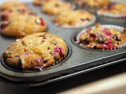

A Strawberry Oat Muffin
Info
These muffins are a common snack in my household, they are made every other month or so, whenever we have the ingredients. They've been one of my favorite snacks recently, and came to mind when I was brainstorming.
Taste really moist and can taste the real cooked strawberries, they taste homemade and aren’t filled with preservatives.
-Joanna, older sister to author
The Recipe
| Ingredient | Amount | |
|---|---|---|
| All Purpose Flour | 1 cup | |
| Large-Flake Rolled Oats | 1 cup | |
| Baking Powder | 2 tsp | |
| Baking Soda | 1/2 tsp | |
| Salt | 1/2 tsp | |
| Ground Cinnamon | 1/4 tsp | |
| Silk Plain Dairy-Free Yogurt Alternative | 3/4 cup | |
| Packed Brown Sugar | 3/4 cup | |
| Vegetable or Canola Oil | 1/2 cup | |
| Finely Grated Orange Zest | 1/2 tsp | |
| Orange Juice | 2 tbsp | |
| Vanilla | 2 tsp | |
| Finely Chopped Strawberries | 1 cup | |
| Sliced Strawberries | 3 |
Instructions
Approximate time: 30 minutes
Serving size: 12 Muffins
Preheat Oven to 400 degrees Farenheit
Line 12 muffin cups with paper liners
Whisk together:
flours, oats, baking powder, baking soda, salt, cinnamon
until combined, then set aside.
In a seperate bowl, stir together:
yogurt alternative, brown sugar, oil, orange zest, orange juice, vanilla
stir into the flour mixture until just moistened, then fold in chopped strawberries.
Scoop into muffin cups
Top each muffin with a slice of strawberry
Bake for 20 minutes, or until toothpick inserted into center comes out clean
Let cool in pan on rack for 5 minutes, then transfer to rack to cool completely
Enjoy!
Possible Additions
-Blueberries to replace the strawberries
-Untested, but most other berries would probably work
In my opinon, strawberries are best, but blueberries aren't bad and I plan to test other berries